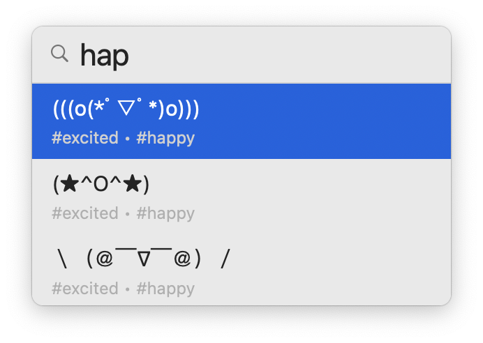

Lighten up your chats with Peachy
Getting bored of the overused emojis? Enter kaomojis to any Mac app now! (★^O^★)

Getting bored of the overused emojis? Enter kaomojis to any Mac app now! (★^O^★)
Open Peachy from any Mac app with your preferred trigger key.

Need inspirations? Browse through more than 1000 kaomojis and find your favorites.


Make your experiences even better by customizing the app to your needs.
Trigger key signals the start of a keyword for searching kaomojis. It should be a single character and is recommended to be a special character or a punctuation mark. With double trigger key enabled, you can start searching kaomojis by entering the key twice.
Peachy is a menu bar app, you can find it as a peach icon on the menu bar of your machine. Can't find it? When the menu bar has no space left, macOS hides overflowing items. Try quitting some other menu bar apps.
I love making apps. Share Peachy with your friends! If you're feeling generous, consider buying me a coffee/cocktail here.
No data is tracked in Peachy. You can even disable crash reports if you prefer, but I need them to monitor and improve the app performance.